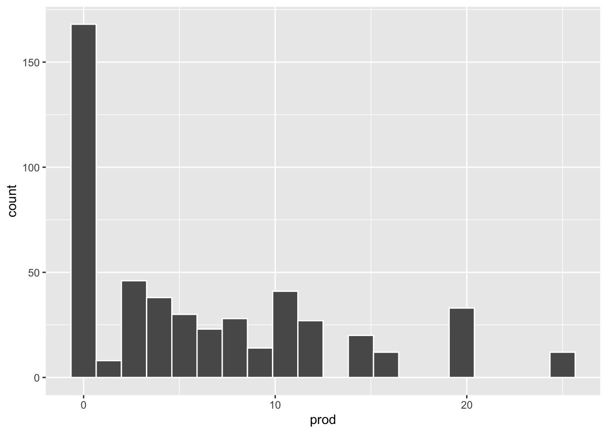
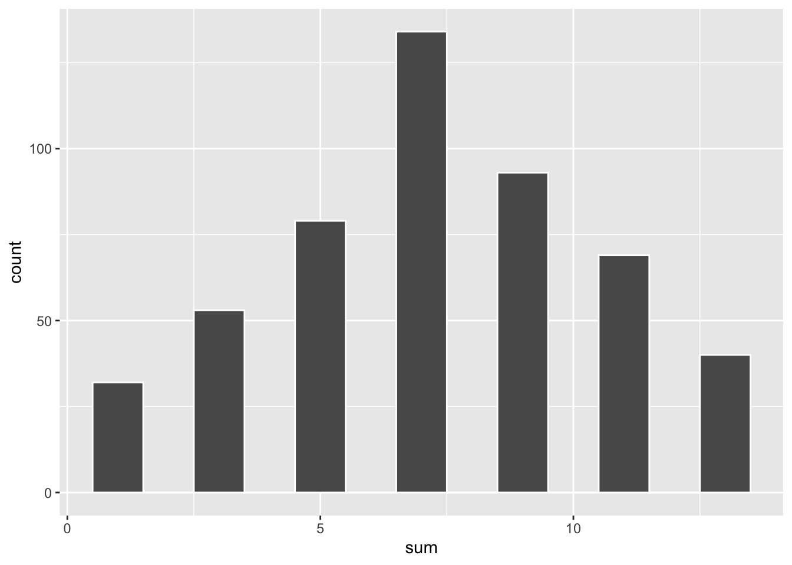

X Prob
1 0 1/8
2 1 3/8
3 2 3/8
4 3 1/8Practice: Expected Value and Variance
1) EV and Var (1st)
Let \(X\) be a random variable such that
\[ X = \begin{cases} -1, & \text{with probability } \ 1/3 \\ 0, & \text{with probability } \ 1/6 \\ 1, & \text{with probability } \ 4/15 \\ 2, & \text{with probability } \ 7/30 \\ \end{cases} \]
Compute the expected value of \(X\).
Compute the variance of \(X\).
Show answers
\(E(X) = (-1)(1/3) + (0)(1/6) + (1)(4/15) + (2)(7/30) = 0.4\)
\(Var(X) = E(X^2) - E(X)^2 \approx 1.373\)
2) EV and Var (2nd)
Consider the box with tickets: [3,3,3,4,4,4,4,5,5,5,5,5]. Suppose we draw once from this box and let \(Z\) be the value of the ticket drawn.
Compute the expected value of \(Z\).
Compute the variance of \(Z\).
Show answers
\(E(Z) = (3)(3/12) + (4)(4/12) + (5)(5/12) \approx 4.1666\)
\(Var(Z) \approx 0.6388\)
3) EV and Var (3rd)
Consider the following random variables:
Let \(X\) be a discrete uniform random variable on the set \(\{-1,0,1\}\).
Let \(Y = X^2\).
Let \(W = \max(X, 0.5)\)
Find \(E(X)\)
Find \(Var(X)\)
Find \(E(Y)\)
Find \(Var(Y)\)
Find \(E(W)\)
Find \(Var(W)\)
Show answers
\(\mu_X = E(X) = (-1)(1/3) + (0)(1/3) + (1)(1/3) = 0\)
\(Var(X) = (-1 - 0)^2(1/3) + (0 - 0)^2(1/3) + (1 - 0)^2(1/3) \approx 0.6666\)
\(\mu_Y = E(Y) = (-1)^2(1/3) + (0)^2(1/3) + (1)^2(1/3) \approx 0.6666\)
\(Var(Y) = (1 - \mu_Y)^2(1/3) + (0 - \mu_Y)^2(1/3) + (1 - \mu_Y)^2(1/3) \approx 0.2222\)
\(\mu_W = E(W) = (0.5)(1/3) + (0.5)(1/3) + (1)(1/3) \approx 0.6666\)
\(Var(W) = (0.5 - \mu_W)^2(1/3) + (0.5 - \mu_W)^2(1/3) + (1 - \mu_W)^2(1/3) \approx 0.0555\)
4) EV and Var (4th)
Let \(X\) be a discrete random variable with the following probability distribution
Let \(Y = |X - 2|\). Find the expected value of \(Y\).
With the same \(Y\) defined above, find its variance: \(Var(Y)\).
Show answers
\(E(Y) = |0-2|(1/8) + |1-2|(3/8) + |2-2|(3/8) + |3-2|(1/8) = 0.75\)
\(Var(Y) = (2-0.75)^2(1/8) + (1-0.75)^2(3/8) +\) \((0-0.75)^2(3/8) + (1-0.75)^2(1/8) = 0.4375\)
5) Product of tickets
We have one box of tickets: [0 1 2 3 4 5]. We draw 2 tickets—with replacement—from the box and take their product. For example, if you get 2 and 4, their product is 8.
Write R code which will allow you to simulate this random experiment.
Write R code which will allow you to simulate 500 repetitions of this random experiment, and graph the empirical distribution of the product of the draws. Hint: the
replicate()is your friend.
Show answers
- R code:
box1 = 0:5
prod(sample(box1, size = 2, replace = TRUE))[1] 6- R code:
simulations = replicate(
n = 500,
expr = prod(sample(box1, size = 2, replace = TRUE))
)
data.frame(prod = simulations) |>
ggplot(aes(x = prod)) +
geom_histogram(bins = 20, color = "white")
6) Sum of tickets
We have two boxes of tickets: A = [0 2 4 6] and B = [1 3 5 7]. We draw—with replacement—1 ticket from box A, and 1 ticket from box B. Let \(S\) be the sum of the two tickets.
Write R code which will allow you get one simulation of this random experiment.
Write R code which will allow you to simulate 500 repetitions of this random experiment and graph the empirical distribution of \(S\). Hint: the
replicate()is your friend.
Show answers
- R code:
box1 = c(0, 2, 4, 6)
box2 = c(1, 3, 5, 7)
sum(sample(box1, 1, replace = TRUE) + sample(box2, 1, replace = TRUE))[1] 11- R code:
simulations = replicate(
n = 500,
expr = {
sum(sample(box1, 1, replace = TRUE) + sample(box2, 1, replace = TRUE))
}
)
data.frame(sum = simulations) |>
ggplot(aes(x = sum)) +
geom_histogram(binwidth = 1, color = "white")
7) Great Danes
The mean gestation period for Great Danes is 70 days (expected value) with an associated variance of 2 \((\text{days})^2\). Let \(Y\) be the length of pregnancy for Great Danes in terms of weeks.
What is \(E(Y)\) in terms of weeks?
What is \(Var(Y)\) in terms of weeks?
What is \(SD(X)\) in terms of weeks?
Show answers
Let \(X\) be the length of pregnancy in days, and \(Y = X/7\) be the length of pregnancy in weeks. Then \(E(Y) = E(X/7) = (1/7) E(X) = 70/7 = 10\) weeks
\(Var(Y) = Var(X/7) = (1/49) Var(X) = 2/49 \approx 0.0408 \ \text{weeks}^2\)
\(SD(Y) = \sqrt{Var(Y)} = \sqrt{2/49} \approx 0.2020\) weeks
8) Two colored dice
Consider two colored 6-sided dice: one of them is a blue die, and the other is a red die. You roll the dice, and look at the numbers on their top faces. Let \(V\) be a random variable that takes the following values:
\[ V = \begin{cases} 0 & \text{if both dice land on even numbers} \\ 1 & \text{if both dice land on odd numbers} \\ 2 & \text{if one die is even, and the other is odd} \end{cases} \]
Find \(E(V)\)
Find \(Var(V)\)
Show answers
First you need to find the probabilities \(P(V=0) = 9/36\), \(P(V=1) = 9/36\) and \(P(V=2) = 18/36\).
Then find \(E(V) = 0(9/36) + 1(9/36) + 2(18/36) = 1.25\)
\(Var(V) = E(V^2) - E(V)^2 = 0.6875\)
9) Games of Chance
Consider the following games:
Game A: Consider the box [1 1 1 0 0 0]; 50 draws will be made at random with replacement from this box. On each draw, you will be paid the amount shown on the ticket, in dollars.
Game B: A die will be rolled 50 times. Each time it shows a three or a five, you win $1; on the other numbers, you win nothing.
Find the expected gain in game A
Find the expected gain in game B
Which game is better if you are betting on winning more money? Explain briefly.
Show answers
Game A
Let \(X\) be the number in a single draw. \(EV(X) = (0)(3/6) + (1)(3/6) = 1/2\)
Let \(S_X\) be the sum of the numbers in 50 draws. Notice that \(S = 50X\). Thus, \(EV(S_X) = 50 E(X) = 50 (1/2) = 25\)
Game B
Let \(Y\) be the dollar amount you win in a single roll (of a die)
\[ P(Y = y) = \begin{cases} 4/6, & \text{for } y = 0 \\ 2/6, & \text{for } y = 1 \\ \end{cases} \]
\(E(Y) = (0)(4/6) + (1)(2/6) = 2/6 = 1/3\)
Let \(Sy\) be the total gain in 50 draws of game B, thus \(EV(S_Y) = 50 E(Y) = 50 (1/3) \approx 16.66\)
In summary, game A is better. In game A there are 50 draws, on each draw you have a probability of 3/6 of winning $1. In contrast, in game B there are 50 rolls, on each roll you have a probability of 2/6 of winning.